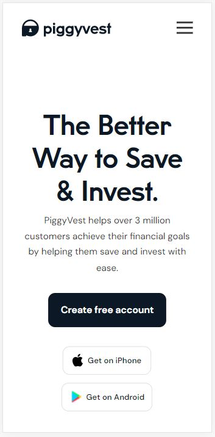
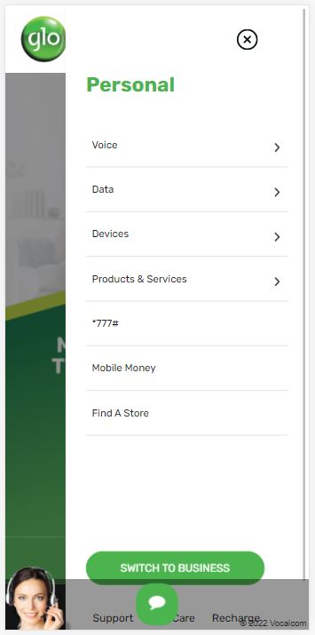

White Space
PiggyVest
piggyvest.com

The great use of white space on piggyvest.com makes everything on the
page; from the name and logo, to the menu bars, and the call-to-action
buttons so visible. This will also make it very easy for anyone to use
this website.
Hick's Law
GloWorld Nigeria
gloworld.com/ng

On gloworld, Hick’s law is obeyed to help the users make decisions
quicker. This is done by placing the menu bar on the top right corner
of the screen. Here, users are able to see their options at a glance
and make a decision instantly. Still in the menu, just at the lower
part of the screen, the user can switch from personal to business and
bac at the tap of a button. This ease of decision is made possible by
the use of Hick’s Law.